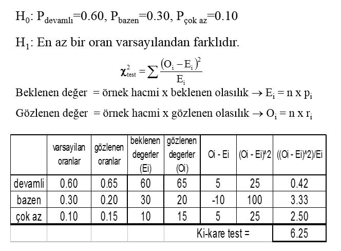

Ki-kare testi(Chi-square) Nedir?
Ki-kare Testi:
"Ki-kare" analiz yöntemi özellikle sosyal bilimler alanındaki çalışmalarda yaygın olarak kullanılan bir analiz yöntemidir. "Ki-kare" analiz yöntemi verilerin sunuluş biçimine göre "Ki-kare uygunluk testi" ve "Ki-kare bağımsızlık testi" olmak üzere iki ana gruba ayrılır.Aslında "Ki-kare" analiz yöntemi sadece ilişkilerin saptanmasında değil, aynı zamanda değişkenler arasındaki farklılıkların belirlenmesinde de kullanılmaktadır. "Ki-kare" analiz yöntemi frekans dağılımları üzerinden işlem yapan bir analiz yöntemidir. Ki-kare testi, gözlenen frekanslar(O) ile beklenen frekanslar(E) arasındaki farkın istatistik olarak anlamlı olup olmadığı temeline dayanır. İki değişkenin birbirlerinden bağımsız olması aralarında bir ilişkinin bulunmadığı anlamına gelir. "Ki-kare" testi değişkenlerin bağımsızlığını ölçmede yaygın olarak kullanılır. Öte yandan "Ki-kare" analiz yöntemi iki değişken arasındaki ilişkinin şiddeti konusunda oldukça sınırlı bilgi verir. Gözlenen "Ki-kare" değerinin büyüklüğü sadece modelin veriye uyumunun bir göstergesi değildir. Bu değer örnek hacminden de etkilenmektedir. Bu nedenle "Ki-kare" analiz yöntemiyle ilgili olarak bilinmesi gereken en önemli özellikle serbestlik derecesidir. Serbestlik derecesi arttıkça "Ki-kare" testi normal dağılıma benzemeye başlar. Ayrıca "Ki-kare" değeri serbestlik derecesine bağlı olduğundan, analizde yer alan gözlem sayısı arttıkça "Ki-kare" değeri de artar. Sonuçta anlamlı farklılıkların varlığına ilişkin işaretler elde etme olasılığı da artar. "Ki-kare" analiz yönteminde Ho (sıfır hipotezi) olarak değişkenler arasında ilişki yoktur varsayımı öne sürülür. Aslında "Ki-kare" analiz yöntemi iki değişken arasında sistematik bir ilişkinin var olup olmadığını belirlemeye yardım eder. Yani "Ki-kare" analiz yöntemi bir çapraz tabloda yer alan değişkenler arasındaki gözlenen ilişkinin istatistiksel olarak anlamlı olup olmadığını test etmek amacıyla kullanılır.
Bu nedenle "Ki-kare" analiz yöntemi daha çok düşük ölçüm düzeylerindeki değişkenler arasındaki ilişkilerin incelenmesinde kullanılır. "Ki-kare" analiz yöntemi gözlenen frekans değerleri ile teorik olarak beklenen frekans değerlerinin karşılaştırmasını yapar. Bir çapraz tabloda yer alan her bir hücre için bu iki değer arasındaki farkın kareleri alınır. Beklenen değere olan oranı bulunur. Bu oranların toplamı ise "Ki-kare" değerini verir. Bulunan bu değer kritik tablo değerinden büyük ise anlamlı bir ilişkinin varlığından söz edilebilir.
KULLANILDIĞI YERLER
Ki-kare testi genellikle,a) İki veya daha çok grup arasında fark olup olma-dığının testinde,
b) İki değişken arasında bağ olup olmadığının tes-tinde,
c) Gruplar arası homojenlik testinde,
d) Örneklemden elde edilen dağılımın istenen bir teorik dağılıma uyup uymadığının testinde(Uyum iyiliği testinde),
e) Varyans için ki-kare testinde,
f) Varyansla ilgili aralık tahmininde,
g) Kontenjans katsayısının hesabında kullanılır.
Şimdi bu kullanımlarla ilgili olan uygunluk testini açıklayalım.
UYGUNLUK TESTİ
Uygunluk testinde, gözlenen bir değişkenin beklenen bir dağılıma uygunluğu veya gözlenen iki değişkenin aynı dağılıma sahip olup olmadığı araş-tırılır. H0'da söz konusu dağılıma uygunluğu, HA'da ise uygun olmadığı iddia edilir.
Bu tip problemde n tane sayısal olarak belirtilmiş kategorisi bulunan isimsel ölçekli bir değişken bulunur. Elde edilen N sayıda örneklem de bu kategorilerin frekansları çokluluğudur yani Veriler nx1 tipli (yani n satırlı ve 1 sütünlü) bir özel "kontenjans tablosu" halindedir ve bu tabloda n tane hücre bulunup her hücrede o hücrenin kategorisinde olan tam sayı ile ifade edilen "çokluluk (frekans)", O_i i=1..n) vardır. Her bir hücre çokluluğu o kategoriye isabet eden "gözümlenen değer" olarak alınır."Sıfır(null) hipotez" bu veri dağılımının teorik olarak ayrık tekdüze dağılım'ina uyacağıdır ve alternatif hipotez bu dağılıma uymayacağıdır. Bu çok basit sıfır hipotezderi ve teorik olarak her bir hücrenin birbirine eşit sayıda "beklenen değer" alacağını önerir. Tekrar dikkat edilmelidir ki "ki-kare dağılım iyiliği" sınaması da (diğer Pearson'un ki-kare sınaması" gibi) eğer sıfır hipotez redelirse "zayıf" sonuç verir; yani eldeki veriler "ayrık tekdüze dağılım"'a uymaz ama hangi dağılım uyduğu bu test ile açığa çıkmaz.
Test istatistiğinin hesaplanması
Uygunluk testinin sınanması için test istatistiği şu formüle göre hesaplanır:

Bu formülde;
= Pearson'un kümülatif test istatistiği olup, bu "hesaplanmış " değeri asimptotik olarak bir ki-kare dağılımı'na yakınlaşmaktadır.
= Gözlemlenen(Observed) frekans değeri;
= Sıfır(null) hipotez önerisinin gerçek olduğu kabul edilerek bir teorik beklenmekte olan frekans değeridir;
Örnek:
Genelde bir istatistik sınıfında, öğrencilerin %60’ının devamlı, %30’unun bazen, %10’unun ise çok az derse geldikleri düşünülmektedir. Bir sınıftan alınan 100 kişilik bir örnek alınmış ve %65’inin devamlı, %20’sinin bazen, ve %15’inin çok az derse geldiği bulunmuştur. Bu sınıfın devam durumunun genel devam durumuna uyduğu söylenebilir mi?H0: P_devamlı=0.60, P_bazen=0.30, P_çok az=0.10
H1: En az bir oran varsayılandan farklıdır.
Bu hipotez testini uygulamak için gözlenen ve beklenen arasındaki farkların büyüklüğüne bakmak gerekir. Bu farkların mutlak değeri ne kadar büyükse, sıfır hipotezi hakkında o kadar kuşkuya düşeriz. Sıfır hipotezi doğruyken ve örnek orta büyüklükteyken (beklenen değerlerin (Ei) herbiri en az 5 ise) , bu hipotez testi için aşağıdaki Ki-Kare test istatistiği kullanılır:
Bu test istatistiği, k-1 serbestlik dereceli(degree of freedom) tablo değeriyle karşılaştırılır. Burada k: kategori sayısıdır.
